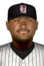

|
|
|  |
Adolfo on Fire: 5-for-5 for Birmingham Thursday, June 18th, 2020 Micker Adolfo was smoking all game at the plate, but couldn't finish his day with a victory cigar. After the 23-year-old Birmingham Barons right fielder tallied 5 hits in 5 at-bats, he was forced to watch as his club dropped the 10-7 decision to the Tennessee Smokies. "That was no fun," Adolfo said to reporters after the game. "You hate to lose any game but it's even worse somehow to feel like you did enough to win." Micker Adolfo doubled in the 2nd, hit an RBI double in the 4th, doubled in the 6th, hit an RBI single in the 7th and singled in the 9th. This year Adolfo is hitting .229 with 9 home runs and 30 RBIs in 51 games played. He also boasts an OBP of .314 with 20 walks and 26 runs scored. |


|